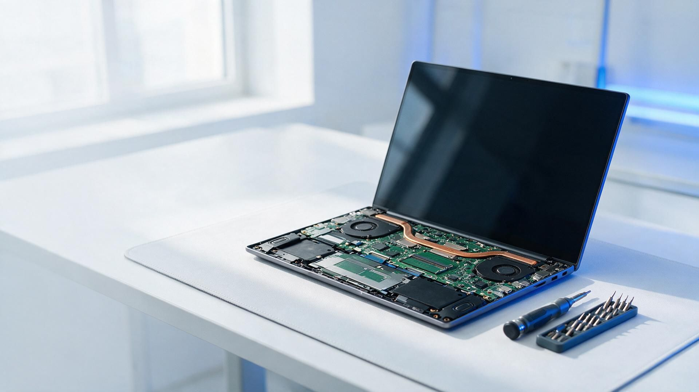
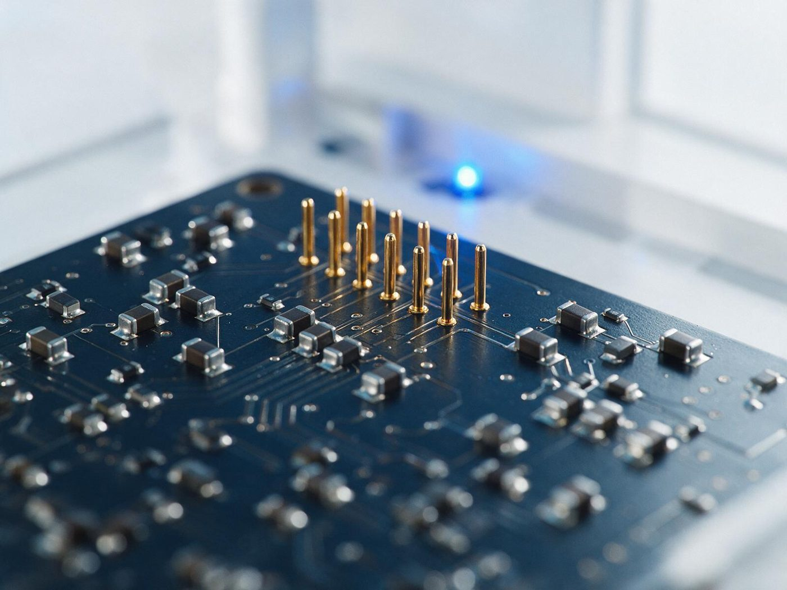
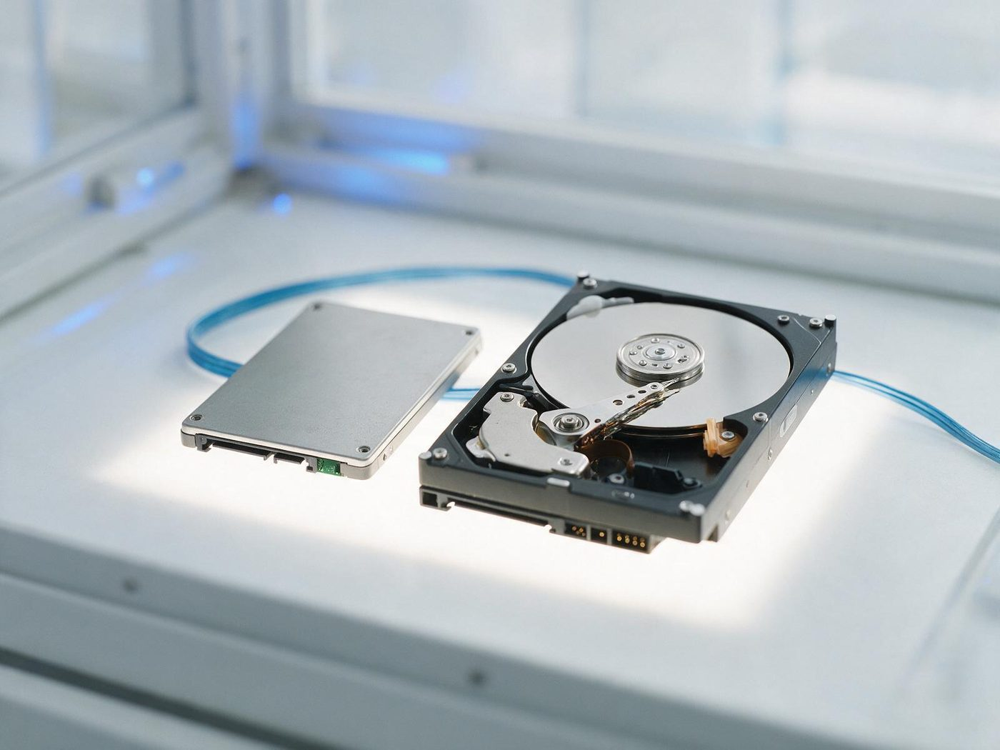
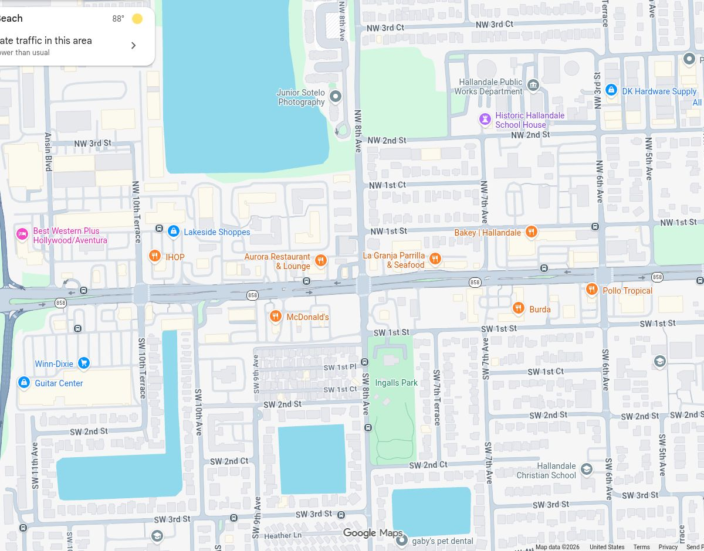

Laptop & desktop repair
Screens, keyboards, power, overheating, slow machines. Honest advice when a repair is not worth it.

HALLANDALE BEACH, FL // COMPUTER REPAIR // BY APPOINTMENT
Laptop and desktop repair, data recovery and virus removal — diagnosed honestly, fixed properly, delivered when promised. Free estimate while you wait.
01 // SERVICES
The four things Frank is called for most, as listed on his site and in his Google reviews. If it is not here, call — it probably is fixable.
Screens, keyboards, power, overheating, slow machines. Honest advice when a repair is not worth it.
Files and family photos recovered from crashed and failing drives — the review customers mention most.
Infections cleaned out, security checked, machine running like it should — in person or remotely.
Clean installs, new-machine setup, used-laptop wipes and transfers. Done remotely when it suits you.
FREE ESTIMATE WHILE YOU WAIT · SAME OR NEXT DAY SERVICE AVAILABLE · REMOTE SUPPORT AVAILABLE
02 // HOW IT WORKS
Describe the problem, or text a photo of the error. Frank answers — reviewers mention reaching him on a Sunday.
A straight answer on what is wrong and what it will take — including when buying new is the better move.
Repaired in the shop or remotely, delivered when promised, with everything explained in plain language.


03 // THE TECHNICIAN
Frank Kovacs is a computer technician and laptop specialist working out of 720 W Hallandale Beach Blvd. No ticket queue, no hand-offs: the person who diagnoses your computer is the one who fixes it and hands it back.
Two hundred sixty-three Google reviewers have given him a perfect five-star average — most often for data recovery, remote help and honest advice.
04 // REVIEWS
“Frank was amazing recovering information off my computer that crashed. All my files but especially photos of my children that I thought I’d lost. He explained everything in a way I too can understand.”
“He deleted old files, ran a virus and malware sweep to make sure my files would be safe — everything remotely while I remained in the comfort of my home. Very affordable and extremely knowledgeable.”
“No-nonsense free initial consultation about a laptop repair. Appreciate the honest advice not to repair but to get a new one. A trustworthy place to go!”
“Diagnosed the problem right away and delivered exactly when promised.”
05 // VISIT
Hours as listed on Google
| Monday | 8:00 AM – 5:00 PM |
| Tuesday | 8:00 AM – 5:00 PM |
| Wednesday | 8:00 AM – 5:00 PM |
| Thursday | 8:00 AM – 5:00 PM |
| Friday | 8:00 AM – 5:00 PM |
| Saturday | 8:00 AM – 5:00 PM |
| Sunday | 8:00 AM – 5:00 PM |
BY APPOINTMENT — PLEASE CALL AHEAD

720 W Hallandale Beach BlvdHallandale Beach, FL 33009 · Open in Maps →